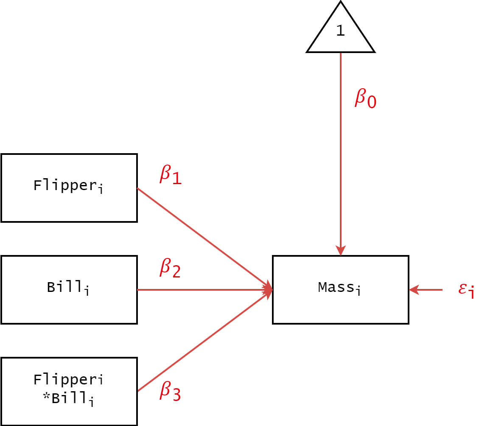
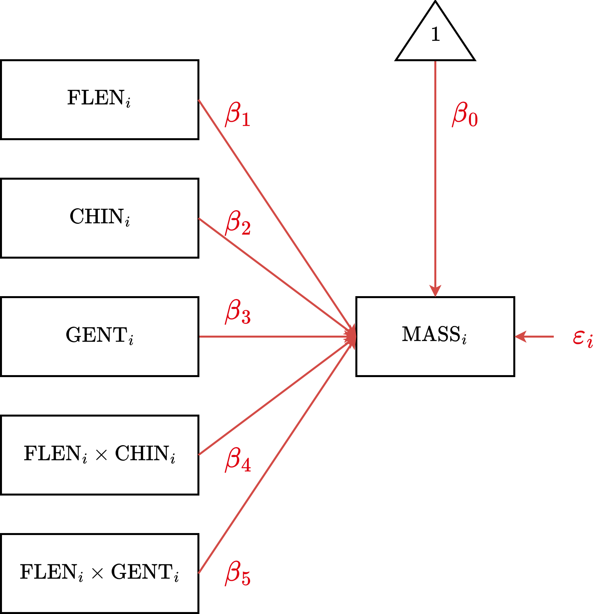
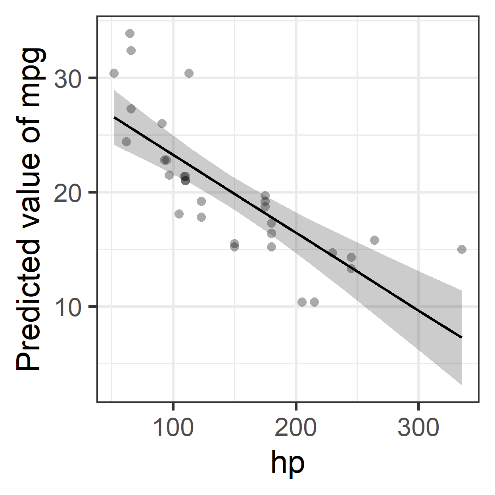
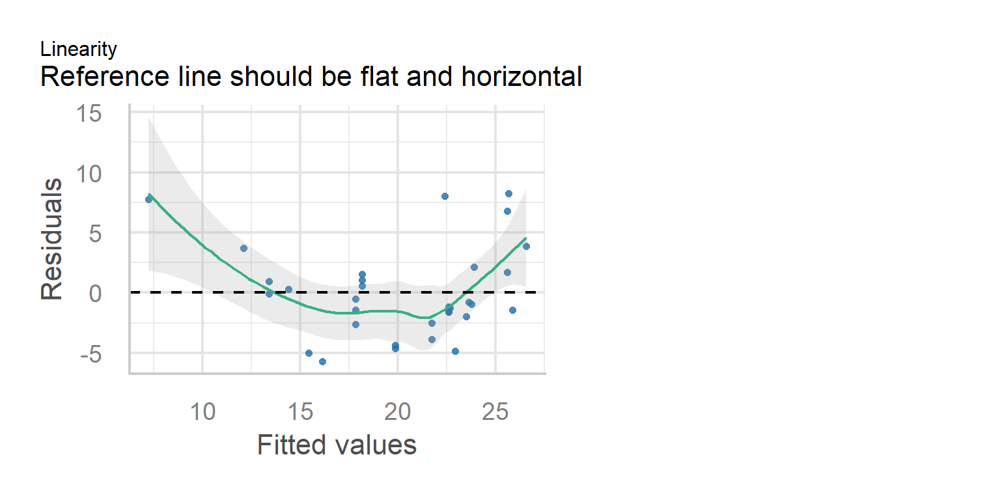

library(easystats)
library(ggplot2)
library(marginaleffects)
library(qqplotr)
library(sandwich)
data("penguins", "mtcars", "cars", "airquality")
theme_set(theme_bw(base_size = 30))Multilevel Modeling
Linear Modeling Review (2/2)
Spring 2026 | CLAS | PSYC 894
Jeffrey M. Girard | Lecture 02b

Roadmap
Continous-by-Continous
Variable ModerationContinuous-by-Discrete
Variable ModerationAssumptions, Diagnostics,
and Extensions of LM
Setup
New Packages:
- qqplotr is called by easystats to add CIs to diagnostic plots
- sandwich is called by easystats to implement HC3 corrections
Moderation
- We may want to know if the effect of one predictor depends on the value on another predictor
- To answer these, we can test interaction effects
- Interaction effects are just slopes for the product of two or more predictors
- Centering continous predictors is helpful
- Types of bivariate moderation
- Continuous-by-Continuous Moderation (CCM)
- Continuous-by-Discrete Moderation (CDM)
- Discrete-by-Discrete Moderation (DDM)
- Higher-order (e.g., three-way) Moderation
CCM
Continuous-by-Continuous Moderation
CCM Equation
Generic
\[y_i = \beta_0 + \beta_1 x_{1i} + \beta_2 x_{2i} + \beta_3 (x_{1i} x_{2i}) + \varepsilon_{i}\]
Example
\[\text{MASS}_i = \beta_0 + \beta_1 \text{FLEN}_{i} + \beta_2 \text{BDEP}_{i} + \\ \beta_3 \text{FLEN}_i \text{BDEP}_i + \varepsilon_i\]
CCM Formula
Generic
y ~ 1 + x1 * x2
Example
body_mass ~ 1 + flipper_len * bill_dep
CCM Diagram

CCM Estimation
Parameter | Coefficient | SE | 95% CI | t(338) | p
-----------------------------------------------------------------------------------
(Intercept) | 4062.79 | 29.56 | [4004.65, 4120.93] | 137.46 | < .001
flipper len | 48.63 | 1.82 | [ 45.05, 52.22] | 26.71 | < .001
bill dep | 44.64 | 13.02 | [ 19.04, 70.25] | 3.43 | < .001
flipper len × bill dep | -8.60 | 1.34 | [ -11.23, -5.96] | -6.41 | < .001CCM Interpretation
After centering the flipper length and bill depth predictors, …
Intercept \((\beta_0=4063.8\), \(p<.001)\)
The expected body mass for a penguin with average flipper length and bill depth.Flipper Length Simple Effect \((\beta_1=48.6\), \(p<.001)\)
The expected change in body mass associated with an increase of 1mm flipper length,
specifically for a penguin with average bill depth.Bill Depth Simple Effect \((\beta_2=44.6\), \(p<.001)\)
The expected change in body mass associated with an increase of 1mm bill depth,
specifically for a penguin with average flipper length.Flipper-Length-by-Bill-Depth Interaction Effect \((\beta_3=-8.6\), \(p<.001)\)
The expected change in the slope of one predictor for an increase of 1 in the other.
The negative sign here means the flipper length effect gets weaker as bills get deeper.
CCM Visualization 1

CCM Visualization 2
CCM Simple Slopes 1
Estimated Marginal Effects
bill_dep | Slope | SE | 95% CI | t(338) | p
----------------------------------------------------------
-1.55 | 61.97 | 2.40 | [57.25, 66.69] | 25.84 | < .001
0.15 | 47.35 | 1.88 | [43.65, 51.05] | 25.18 | < .001
1.55 | 35.32 | 3.08 | [29.25, 41.38] | 11.45 | < .001
Marginal effects estimated for flipper_len
Type of slope was dY/dXCCM Simple Slopes 2
Estimated Marginal Effects
flipper_len | Slope | SE | 95% CI | t(338) | p
-----------------------------------------------------------------
-10.91 | 138.47 | 22.01 | [ 95.17, 181.77] | 6.29 | < .001
-3.92 | 78.30 | 15.28 | [ 48.25, 108.34] | 5.13 | < .001
12.09 | -59.25 | 17.90 | [-94.46, -24.03] | -3.31 | 0.001
Marginal effects estimated for bill_dep
Type of slope was dY/dXCDM
Continuous-by-Discrete Moderation
CDM Equation
Generic
\[ \begin{aligned} y_i &= \overbrace{(\beta_0 + \beta_2 D_{1i} + \dots)}^{\text{Group-Specific Intercept}} + \overbrace{(\beta_1 + \beta_3 D_{1i} + \dots)}^{\text{Group-Specific Slope}} \cdot x_i + \varepsilon_i \end{aligned} \]
Example
\[ \begin{aligned} \text{MASS}_i &= (\beta_0 + \beta_2 \text{CHIN}_{i} + \beta_3 \text{GENT}_i) \\ &\quad + (\beta_1 + \beta_4 \text{CHIN}_{i} + \beta_5 \text{GENT}_i) \cdot \text{FLEN}_i + \varepsilon_i \end{aligned} \]
CDM Formula
Generic
y ~ 1 + x * f
Example
mass ~ 1 + flipper * species
CDM Diagram

CDM Estimation
Parameter | Coefficient | 95% CI | p
-----------------------------------------------------------------------------
(Intercept) | 4060.55 | [3944.47, 4176.62] | < .001
flipper len | 32.83 | [ 23.73, 41.93] | < .001
species [Chinstrap] | -151.42 | [-310.58, 7.73] | 0.062
species [Gentoo] | 126.66 | [ -85.98, 339.31] | 0.242
flipper len × species [Chinstrap] | 1.74 | [ -13.71, 17.19] | 0.825
flipper len × species [Gentoo] | 21.79 | [ 8.14, 35.44] | 0.002 CDM Interpretation 1
After centering the Flipper Length predictor and setting Adelie as reference, …
Intercept \((\beta_0=4060.6\), \(p<.001)\)
The expected body mass for an Adelie penguin with average flipper length.Flipper Length Simple Effect \((\beta_1=32.8\), \(p<.001)\)
The expected change in mass associated with an increase of 1mm flipper length,
specifically for the reference group (Adelie).Chinstrap Simple Effect \((\beta_2=-151.4\), \(p=.062)\)
The difference in expected mass between Chinstrap and Adelie penguins,
specifically for penguins with average flipper length.Gentoo Simple Effect \((\beta_3=126.7\), \(p=.242)\)
The difference in expected mass between Gentoo and Adelie penguins,
specifically for penguins with average flipper length.
CDM Interpretation 2
Flipper-by-Chinstrap Interaction Effect \((\beta_4=1.7\), \(p=.825)\)
The adjustment to the flipper slope for Chinstraps compared to Adelies.
The flipper–mass relationship is not significantly different for Chinstraps and Adelies.Flipper-by-Gentoo Interaction Effect \((\beta_5=21.8\), \(p=.002)\)
The adjustment to the flipper slope for Gentoos compared to Adelies.
The flipper–mass relationship is significantly steeper for Gentoos than for Adelies.
CDM Visualization
CDM Simple Slopes
Estimated Marginal Effects
species | Slope | SE | 95% CI | t(336) | p
-----------------------------------------------------------
Adelie | 32.83 | 4.63 | [23.73, 41.93] | 7.10 | < .001
Chinstrap | 34.57 | 6.33 | [22.11, 47.03] | 5.46 | < .001
Gentoo | 54.62 | 5.17 | [44.46, 64.79] | 10.57 | < .001
Marginal effects estimated for flipper_len
Type of slope was dY/dXNotice the Gentoo slope (54.6) is the Adelie slope (32.8) plus the interaction (21.8).
A Formula Resource
| Formula | Slopes Estimated | ||||||
|---|---|---|---|---|---|---|---|
y ~ x
|
\(x\) | ||||||
y ~ x + w
|
\(x\) | \(w\) | |||||
y ~ x * w
|
\(x\) | \(w\) | \(xw\) | ||||
y ~ x + w + z
|
\(x\) | \(w\) | \(z\) | ||||
y ~ x * w + z
|
\(x\) | \(w\) | \(z\) | \(xw\) | |||
y ~ x * (w + z)
|
\(x\) | \(w\) | \(z\) | \(xw\) | \(xz\) | ||
y ~ (x + w + z)^2
|
\(x\) | \(w\) | \(z\) | \(xw\) | \(xz\) | \(wz\) | |
y ~ x * w * z
|
\(x\) | \(w\) | \(z\) | \(xw\) | \(xz\) | \(wz\) | \(xwz\) |
Note that predictors can be continuous or discrete, but if a discrete predictor has more than two levels, you will end up with additional slopes due to dummy coding. To represent \(g\) groups, it will create \(g-1\) dummy codes (with a slope for each).
Linearity Assumption
Overview
- The Assumption: The model matches the shape of the data
- We assume the relationship is a straight line (additive)
- Intuition: A one-unit increase in \(x\) always produces the same increase in \(y\)
- The Problem: Mismatched shapes (misspecification)
- Real relationships are often curved (practice effects, diminishing returns)
- If we force a straight line onto a curve, our predictions will be wrong
- The Solution: Flexible modeling
- Simple Fix: For basic curves, we add polynomial (e.g., quadratic) terms
- Advanced Fix: For complex shapes, we use generalized additive modeling (GAM)
- Takeaway: We transform the predictors to allow the model to bend
Example
Note: Adding horsepower hurts fuel economy, but this levels off (you can’t go below 0 mpg), creating the curve that the linear model misses.

Diagnostic
Simple Fix
- The Trick: Transform the Data, not the Parameters.
- We can model curves by adding a squared term (\(x^2\)) as a new predictor.
- Still Linear: \(y_i = \beta_0 + \beta_1 x_i + \beta_2 x_i^2 + \varepsilon_i\)
- We can do this in R easily using
poly(x, degree = 2)orpoly(x, 2) - Since we are still just adding weighted terms, this remains a Linear Model (LM).
- True Non-Linear Models (The “Illegal” Move):
- Not Linear: \(y_i = \beta_0 \cdot x_i^{\beta_1}\)
- Here, the parameter is an exponent. This requires different math!
Implementation
Homogeneity Assumption
Overview
- The Assumption: The model is equally reliable everywhere
- We assume the error is constant for all participants
- Intuition: The model should predict low scores as precisely as high scores
- The Problem: Uneven reliability (heteroskedasticity)
- The model is precise for some people but wildly guessing for others
- Visual: A “megaphone” shape (errors spread out as values increase)
- Consequence: Standard errors are wrong (usually too small)
- The Solution: Handling the noise
- Simple Fix: Apply heteroskedasticity-consistent (HC3) standard errors
- Advanced Fix: Model the error variance explicitly using location–scale models
- Takeaway: We stop assuming the noise is the same for everyone
Example
Note: At low speeds, points are near the line. At high speeds, they spread out. We predict distance for “slow” stops well, but not for “fast” stops.

Diagnostic

Simple Fix
- The Logic:
- We keep the parameter point estimates unchanged
- We penalize the Standard Errors where variance is high
- The creates “honest” \(p\)-values that account for noise
- We use heteroskedasticity-consistent SEs (formula HC3)
- The Intuition:
- Standard (OLS): Assumes the “noise level” is identical for everyone. It calculates one global variance (\(\sigma^2\)) and trusts it everywhere.
- Robust (HC3): Acknowledges that precision varies. It uses the actual squared error of each observation (\(\varepsilon_i^2\)) to estimate the variance.
- The “Penalty”: If the model sees large errors in a specific area, it “learns” that the slope is unstable there and inflates the SE to reflect that uncertainty.
Implementation
Parameter | Coefficient | SE | 95% CI | t(48) | p
-------------------------------------------------------------------
(Intercept) | -17.58 | 6.76 | [-31.17, -3.99] | -2.60 | 0.012
speed | 3.93 | 0.42 | [ 3.10, 4.77] | 9.46 | < .001Parameter | Coefficient | SE | 95% CI | t(48) | p
-------------------------------------------------------------------
(Intercept) | -17.58 | 5.93 | [-29.51, -5.65] | -2.96 | 0.005
speed | 3.93 | 0.43 | [ 3.07, 4.79] | 9.20 | < .001Observation: In this case, the penalty is small! But we pay it anyway because it ensures our inferences and conclusions are valid.
Normality Assumption
Overview
- The Assumption: The errors follow a bell curve
- We assume the residuals are normally distributed around zero
- Intuition: Most prediction errors are small; extreme errors are rare and symmetric
- The Problem: Non-normality of error
- The residuals might be skewed, bounded, or have “heavy tails”
- Consequence: p-values are untrustworthy, especially in small samples (\(n<50\))
- The Solution: Changing the Assumptions
- Simple Fix: We resample or “bootstrap” our own data to build empirical estimates of uncertainty without assuming any shape for the sampling distribution
- Advanced Fix: We explicitly model the error distribution using Generalized Linear Modeling (GLM), e.g., logistic for binary, poisson for counts, cumulative for ordinal
- Takeaway: We stop forcing non-normal data into a normal shape.
Example
Note: The model fits a straight line, but there are outliers and negative Ozone (impossible) is being predicted.

Diagnostic

Simple Fix
- The Logic:
- If the residuals aren’t Normal, the formulas for SEs and CIs are wrong
- Resampling methods like bootstrapping skips the formulas
- We simulate repeating the experiment 2,000 times using our own data
- This is done by sampling \(n\) observations each time with replacement
- If 95% of those simulations show a negative slope, the effect is reliable
- The Intuition:
- Standard (Parametric): “I assume the sampling distribution is a perfect bell curve.”
- Bootstrap (Non-Parametric): “I don’t assume anything about the shape of the sampling distribution. I built the distribution myself by reshuffling the data.”
Implementation
Parameter | Coefficient | SE | 95% CI | t(114) | p
--------------------------------------------------------------------
(Intercept) | 96.87 | 7.24 | [82.53, 111.21] | 13.38 | < .001
Wind | -5.55 | 0.69 | [-6.92, -4.18] | -8.04 | < .001Parameter | Coefficient | 95% CI | p
----------------------------------------------------
(Intercept) | 97.00 | [79.13, 115.05] | < .001
Wind | -5.56 | [-7.24, -4.03] | < .001Observation: The confidence interval changed slightly. Because we had a decent sample size (\(n=153\)), the Central Limit Theorem helped the standard approach. In smaller samples, the difference would likely be larger.
Independence Assumption
Preview
- The Assumption: The residuals are independent
- We assume that every data point provides unique, unrelated information
- Intuition: Knowing the error for observation \(i\) tells us nothing about observation \(j\)
- The Problem: Clustering and dependency
- Observations are often related (e.g., repeated measures, students nested in schools)
- Consequence: The “effective” sample size is much smaller than \(n\), leading to an overestimation of confidence (e.g., \(p\)-values are too small, Type I errors)
- The Solution: Addressing the structure
- Simple Fix: Cluster-robust SEs or Fixed effects (dummy codes) per cluster
- Advanced Fix: Generalized estimating equations (GEE) or Multilevel models (MLM)
- Takeaway: We stop assuming rows are independent and model the hierarchy